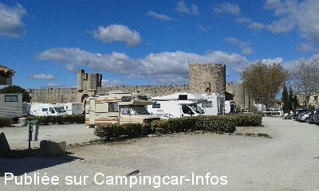
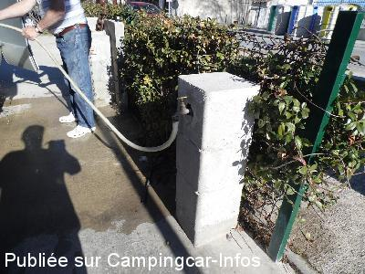
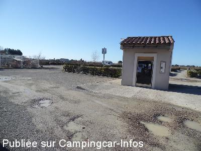
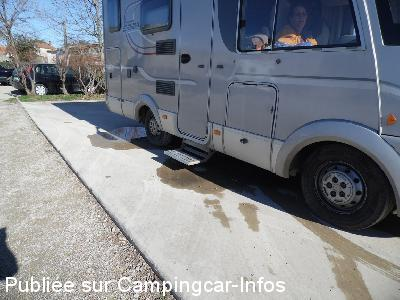
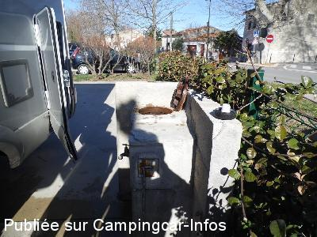
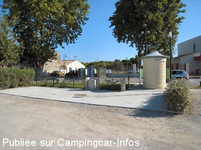

ASN = Aire de services avec stationnement nuit possible de :
AIGUES MORTES
(N° 545)
Accès/adresse :
Boulevard Diderot
30220 AIGUES MORTES
30220 AIGUES MORTES
Latitude : (Nord) 43.56547° Décimaux ou 43° 33′ 55′′
Longitude : (Est) 4.19596° Décimaux ou 4° 11′ 45′′
Tarif : 2016
Stationnement, services : 15,30 €
Type de borne : Artisanale
Services :


Au pied des remparts, tous commerces
Autres informations :
100 emplacements

Le 06/04/2015 par Finale

Le 23/02/2014 par Louisette

Le 23/02/2014 par Louisette

Le 23/02/2014 par Louisette

Le 23/02/2014 par Louisette

Le 13/09/2011 par michelene73
de
daniel
le 26/03/2016 :
le 25 avril.
§confirme les nouveaux tarifs affichés a l'entrée
progressifs de1/4 d'heure (50cts) à 12h (15,30e) de stationnement. puis tarif unique pour durée de 12 a 24heures.
le reste sans changement état parking, aire de service....
le 25 avril.
§confirme les nouveaux tarifs affichés a l'entrée
progressifs de1/4 d'heure (50cts) à 12h (15,30e) de stationnement. puis tarif unique pour durée de 12 a 24heures.
le reste sans changement état parking, aire de service....
de
jerome
le 23/03/2016 :
§ Nous venons rassurer Patfalu et Yves, le tarif de 12 à 24 heures est passé à 15,30 euros.
La plate forme de vidange est dans un état épouvantable, mais toujours services compris dans la nuitée.
Bonnes promenades dans la cité historique !
Merci Aigues Mortes de nous accueillir.
§ Nous venons rassurer Patfalu et Yves, le tarif de 12 à 24 heures est passé à 15,30 euros.
La plate forme de vidange est dans un état épouvantable, mais toujours services compris dans la nuitée.
Bonnes promenades dans la cité historique !
Merci Aigues Mortes de nous accueillir.
de
leolulu05
le 11/12/2015 :
Passage le 06/12/2015
Aire parfaitement bien placée pour la visite de la ville intra-muros, mais très fréquentée.
Tous les services compris mais pas d'électricité.
WC publics à disposition et propres .
Prix au temps passé avec un maxi pour 24 h
Passage le 06/12/2015
Aire parfaitement bien placée pour la visite de la ville intra-muros, mais très fréquentée.
Tous les services compris mais pas d'électricité.
WC publics à disposition et propres .
Prix au temps passé avec un maxi pour 24 h
de
Finale
le 06/04/2015 :
Pâques 2015.
Parking à côté des remparts, idéal pour visiter la citadelle. Forte affluence, et également accessible aux voitures.
Pâques 2015.
Parking à côté des remparts, idéal pour visiter la citadelle. Forte affluence, et également accessible aux voitures.
de
Alaing73
le 23/09/2014 :
De passage le 26/08/14
Aire très bien mais attention aux jours de forte affluence! J'ai retrouvé mon CC lacéré sur toute sa longueur par des vandales (j'ai du faire une déclaration à la Gendarmerie) et de plus des automobilistes considèrent l'aire de vidange comme des places de parking! Contact pris avec la Police Municipale celle-ci nous a dit ne pas pouvoir intervenir car il n'y a pas de panneau interdisant le stationnement sur l'aire de vidange! (le panneau est parait-il en commande...
De passage le 26/08/14
Aire très bien mais attention aux jours de forte affluence! J'ai retrouvé mon CC lacéré sur toute sa longueur par des vandales (j'ai du faire une déclaration à la Gendarmerie) et de plus des automobilistes considèrent l'aire de vidange comme des places de parking! Contact pris avec la Police Municipale celle-ci nous a dit ne pas pouvoir intervenir car il n'y a pas de panneau interdisant le stationnement sur l'aire de vidange! (le panneau est parait-il en commande...
de
a&b
le 23/07/2014 :
Dober dan!
Julij 2014. Samo parkirali! To mesto ima potencial. Veliko, udobno, bli¸ina zanimivosti, sprehodi, mesto, opremljeno, javni WC, sprejemljiva cena, udoben uvoz in izvoz > 7m.
Dober dan!
Julij 2014. Samo parkirali! To mesto ima potencial. Veliko, udobno, bli¸ina zanimivosti, sprehodi, mesto, opremljeno, javni WC, sprejemljiva cena, udoben uvoz in izvoz > 7m.
de
ALBERT Maurice et Jacqueline
le 15/04/2014 :
enfin une commune qui a compris que les camping-caristes pouvaient s'arrêter chez elle. Le tarif n'est pas plus prohibitif que chez certain et au moins on peut stationner près du site et visiter tranquillement, ce qui n'est pas le cas par exemple de Arles où 4 places sont prévues et encore cela ressemble à un terre-plein de carrefour. Merci beaucoup
enfin une commune qui a compris que les camping-caristes pouvaient s'arrêter chez elle. Le tarif n'est pas plus prohibitif que chez certain et au moins on peut stationner près du site et visiter tranquillement, ce qui n'est pas le cas par exemple de Arles où 4 places sont prévues et encore cela ressemble à un terre-plein de carrefour. Merci beaucoup
de
Louisette
le 22/02/2014 :
Bonsoir, ce matin passage sur cette aire, pour effectuer les services, il faut avancer jusqu'à la barrière, demander un ticket à la borne pour l'ouverture de la arrière.
Le tarif est 1,60 € l'heure.
Une fois les services effectués, il faut payer à la borne, le ticket est validé.
Il faut l'introduire dans la borne de sortie.
L'évacuation des eaux usées se fait sur une plateforme bétonnée, il y a une évacuation des K7 avec eau pour le rinçage.
Un deuxième robinet pour l'eau propre.
Bonsoir, ce matin passage sur cette aire, pour effectuer les services, il faut avancer jusqu'à la barrière, demander un ticket à la borne pour l'ouverture de la arrière.
Le tarif est 1,60 € l'heure.
Une fois les services effectués, il faut payer à la borne, le ticket est validé.
Il faut l'introduire dans la borne de sortie.
L'évacuation des eaux usées se fait sur une plateforme bétonnée, il y a une évacuation des K7 avec eau pour le rinçage.
Un deuxième robinet pour l'eau propre.
de
Dann
le 11/03/2013 :
Février 2013 :
Parfait pour visiter la ville.
Lors de notre passage, la commune répandait des gravillons.
Pas de tarif hors saison, mais eau comprise dans le forfait.
Les wc sont gratuits.
Février 2013 :
Parfait pour visiter la ville.
Lors de notre passage, la commune répandait des gravillons.
Pas de tarif hors saison, mais eau comprise dans le forfait.
Les wc sont gratuits.
de
Vulcovar
le 10/10/2012 :
Nous sommes arrivés le 1/10/2012, vers 17h30. Après une petite visite du site, un repas dans un resto, et une nuit, nous en avons encore profité le lendemain matin, (pour faire quelques emplettes). Nous sommes repartis en fin de mâtiné, en payant 9,40 euro, comme prévu, le tarif est toujours le même, avec possibilité de vidange, eau, toilettes gratuites. Personnellement je trouve cette aire, très bien, proche de la cité, calme, et pouvant recevoir à mon avis plus d'une centaine de C-cars, quant au prix, sans comparaison avec l'autre aire de l'autre coté de la cité (12 eur), beaucoup moins accueillante .
Nous sommes arrivés le 1/10/2012, vers 17h30. Après une petite visite du site, un repas dans un resto, et une nuit, nous en avons encore profité le lendemain matin, (pour faire quelques emplettes). Nous sommes repartis en fin de mâtiné, en payant 9,40 euro, comme prévu, le tarif est toujours le même, avec possibilité de vidange, eau, toilettes gratuites. Personnellement je trouve cette aire, très bien, proche de la cité, calme, et pouvant recevoir à mon avis plus d'une centaine de C-cars, quant au prix, sans comparaison avec l'autre aire de l'autre coté de la cité (12 eur), beaucoup moins accueillante .
de
michelene73
le 13/09/2011 :
29 aout 2011; Ce parking est en fait aussi une aire de service avec tous les services gratuits. WC publics. Le tout pour 9.40€ si vous restez plus de 8h et moins de 24h.
Parking très pratique, calme et à coté des remparts.
Nous en avons profité pour essayer le restaurant l'Eden: Service impeccable par 2 jeunes filles super dynamiques, foie gras et pavé de taureau sublimes.
29 aout 2011; Ce parking est en fait aussi une aire de service avec tous les services gratuits. WC publics. Le tout pour 9.40€ si vous restez plus de 8h et moins de 24h.
Parking très pratique, calme et à coté des remparts.
Nous en avons profité pour essayer le restaurant l'Eden: Service impeccable par 2 jeunes filles super dynamiques, foie gras et pavé de taureau sublimes.
de
Jacqueline DUFFROS
le 02/05/2008 :
Bonjour. Nous avons garé le CCar sur ce parking le temps de la visite des Salins du Midi. Il est spécifié à l'entrée que les CCars doivent stationner à cet endroit. Sinon, il y a aussi l'aire de services nouvellement refaite.
Bonjour. Nous avons garé le CCar sur ce parking le temps de la visite des Salins du Midi. Il est spécifié à l'entrée que les CCars doivent stationner à cet endroit. Sinon, il y a aussi l'aire de services nouvellement refaite.